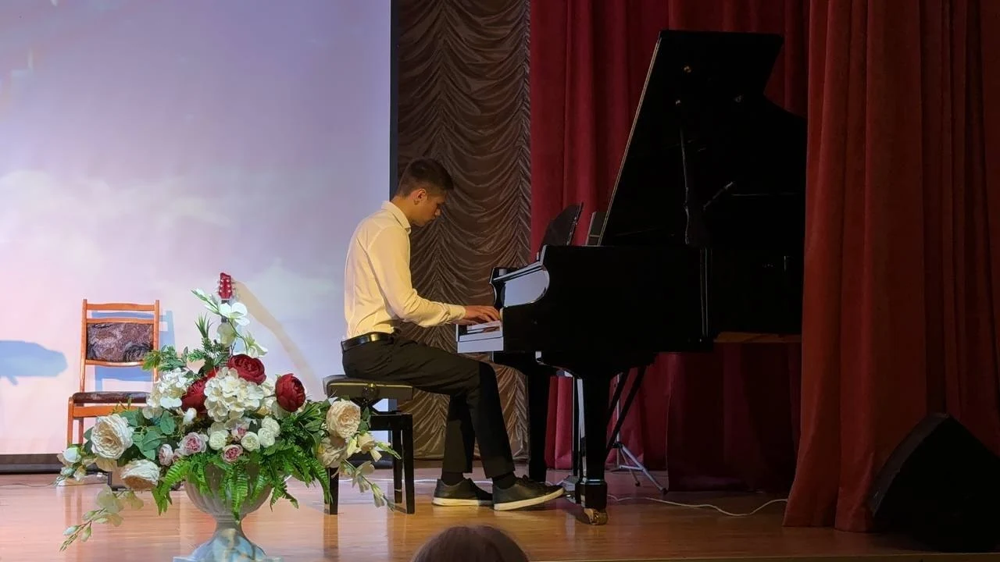

Мои увлечения
Основные направления
Мои интересы охватывают как технические, так и творческие сферы, помогая мне сохранять баланс между точными науками и гуманитарными дисциплинами. С ранних лет я погружен в мир IT, но при этом всегда находил время для искусства и глубокого изучения фундаментальных предметов. Для меня важно всестороннее развитие, поэтому я стараюсь постоянно расширять свой кругозор в самых разных направлениях.
- Программирование и разработка: Создание ботов, коммерческая разработка скриптов на Python и изучение современных веб-технологий.
- Музыкальное искусство: Я окончил музыкальную школу с красным аттестатом и имею опыт выступления в масштабном хоре.
- История: Глубокое изучение истории средневековой Руси, анализ политических структур и военных конфликтов.
- Иностранные языки: Постоянное совершенствование английского языка для свободного чтения технической документации и коммуникации.
- Высшая математика: Погружение в линейную алгебру, теорию множеств и математический анализ вне рамок стандартной программы.
Фото

